Pedro Benadiba · 2025 · Branding · Gestión Cultural
Descripción del Proyecto
MULO es un proyecto de branding desarrollado para un espacio de gestión cultural independiente. El proyecto abarca el diseño de identidad visual completo: desde la construcción del sistema de marca hasta sus aplicaciones en piezas editoriales, comunicación digital y materiales de difusión. La identidad busca equilibrar la fuerza gráfica con una estética que refleje el carácter autónomo, irreverente y comprometido del espacio.
El proceso incluyó el desarrollo de un fanzine impreso que funciona como manifiesto y carta de presentación del proyecto, un teaser audiovisual y un sitio web que consolida la propuesta online. Cada pieza fue pensada como parte de un ecosistema coherente, con reglas visuales claras que permiten su extensión y adaptación a distintos formatos y soportes.
La Idea
La marca MULO surge como respuesta a la necesidad de un lenguaje visual propio para un espacio que programa música, arte y pensamiento crítico fuera de los circuitos convencionales. El nombre condensa una idea de carga, de movimiento y de trabajo colectivo —rasgos que definen la forma en que el espacio se relaciona con su comunidad.
El sistema de identidad trabaja con una tipografía de fuerte presencia, una paleta restringida y un conjunto de recursos gráficos flexibles que permiten comunicar desde el cartel de una fecha hasta la portada de un fanzine. La consistencia visual no proviene de la rigidez sino de la claridad de criterios: MULO puede mutar en cada pieza y seguir siendo reconocible.
Integrantes
Compañeros
Propósito
Branding y Gestión Cultural — Lic. en Diseño — UTDT
Herramientas Utilizadas
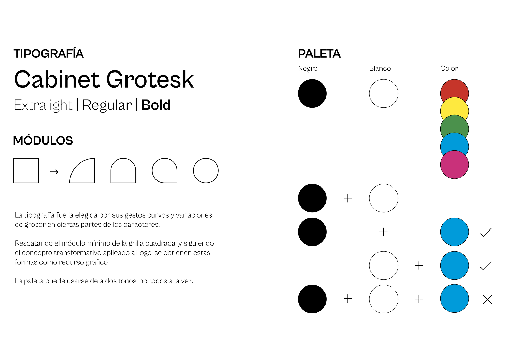
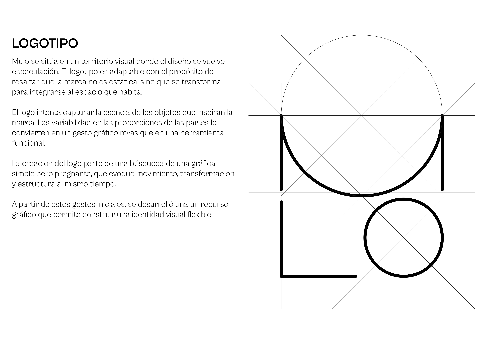
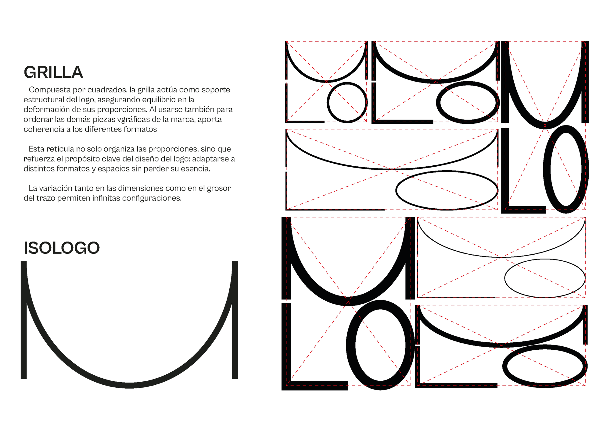
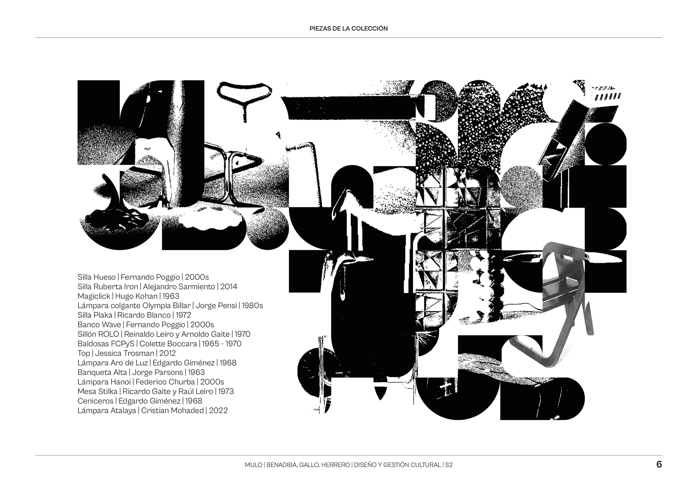
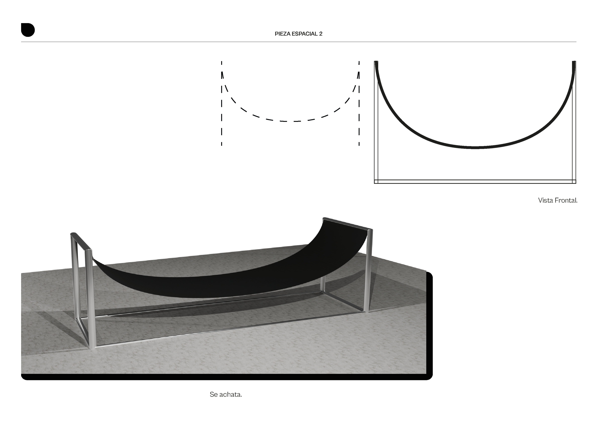
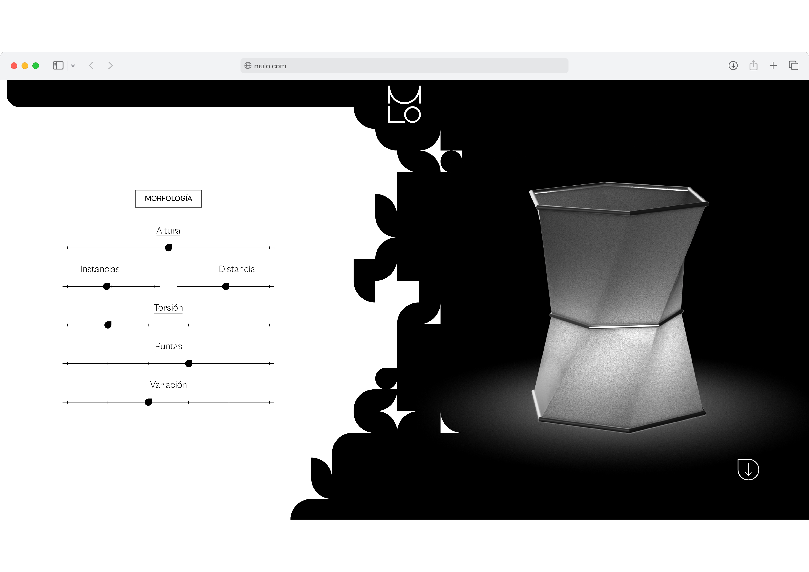
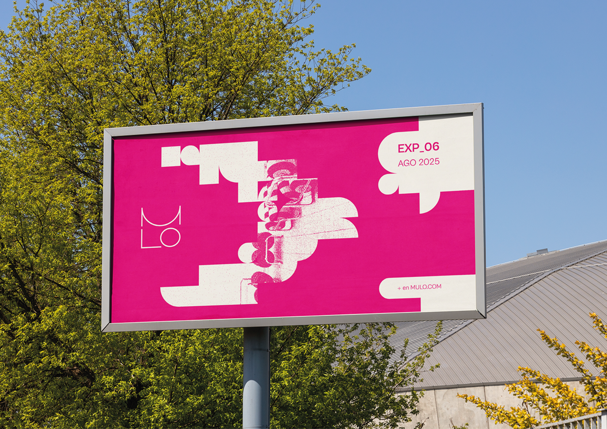
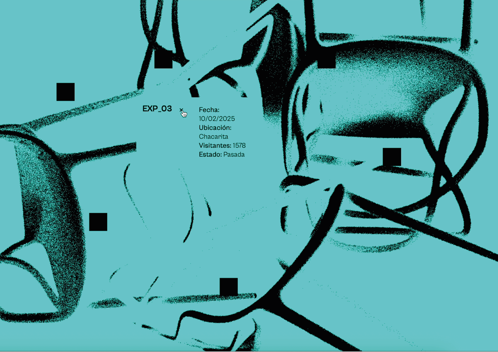
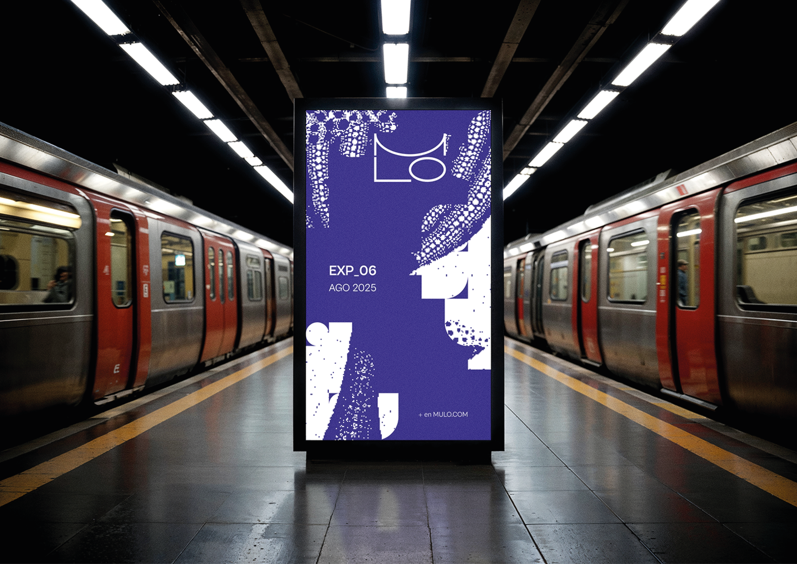
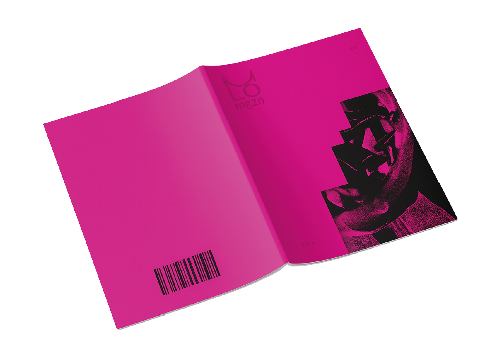
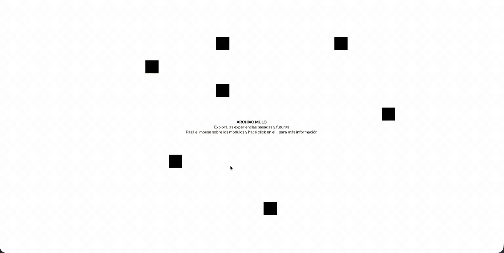